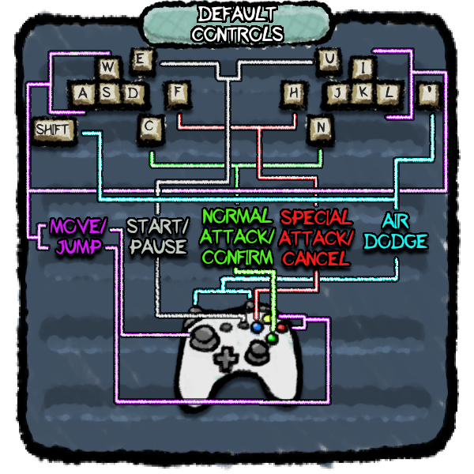

Iteration Timeline
- GAU (Ground Normal Up)
- GAN (Ground Normal Neutral)
- GAD (Ground Normal Down)
- AAU (Air Normal Up)
- AAN (Air Normal Neutral)
- AAD (Air Normal Down)
- GBN (Ground Special Neutral)
- ABN (Air Special Neutral)
- (Usually differs only slightly from GBN)
- Dash
- By flicking the stick left or right while on the ground.
- Turnaround
- By slightly tilting the stick in the other direction.
- Walk
- By tilting the stick or after exiting a dash.
- Air Dash
- By pressing the air dash button while inputting a direction, or by not holding a direction you can perform a neutral air dash.
- Normal Attack
- Special Attack
- Jump
- By pressing the jump button.
- Short-hop
- By tapping the jump button and releasing before jumpsquat ends.
- Double Jump
- Some characters may have more than two jumps.
- Fast-Fall
- Flick the stick down once while in the air to gain a burst of downward momentum.
- Plat-drop
- By holding down while on a platform or before landing on a platform.
- Pickup Item
- By performing a normal attack on an item or by air dashing over it.
- Throw Item
- Can be thrown up, down, left, or right. Items can also be thrown at 3 different speeds, soft by tilting slightly, medium by tilting more than slightly, and heavy by flicking the stick in the desired direction.
- Trivia: Characters have different frame data on throwing items.
About Abomination Fight Pit Deluxe
Abomination Fight Pit Deluxe is a hand-drawn platform fighter developed in Phaser 3 over the course of and beyond the Spring 2020 semester. The purpose of this website is to chronicle it's development history up to 0.5.0. Through the links above you'll be able to play each major build of the game up to this point, as well as view concept art and design sketches, footage of each build, and additional notes regarding the differences and significance of each build.
How to Play (AFPD)
Controls
[ NOTE: You can set controller sensitivity in the options menu (In 0.3.1+). For Xbox gamepads, the default values are fine, but for Gamecube controllers, a sensitivity of 1.2 is recommended. ]
[ If controller input doesn't work: Keep controllers plugged in, close browser completely, and reopen browser. Note that on a Mayflash adapter, player 1 is the 4th port. ]
Note that you may only set custom controls and input sensitivity in versions 0.3.1 and above.
Mechanics
All characters have the following attacks:
Some characters have additional or alternate actions possible while in an attack, for example, Prince Slime can aim his grab and subsequent throw by tilting the stick up, left, down, or right, and Carpenter Chicken can throw their hammers at different velocities depending on the analog stick input.
Additionally, you can instantly turn around by performing an attack in the opposite direction.
All characters can perform the following actions:
For more details about the game mechanics and whatnot, drop by the Itch.io page's community forum!